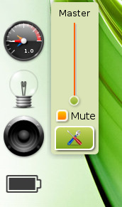
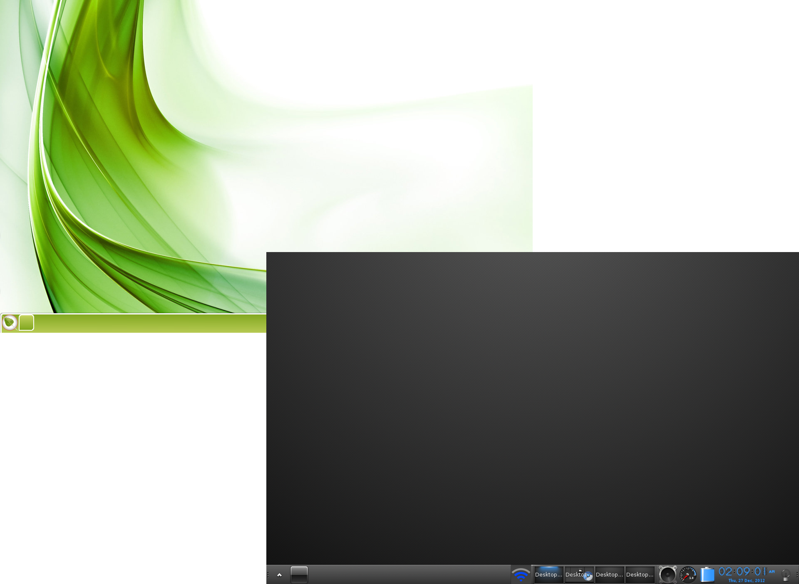
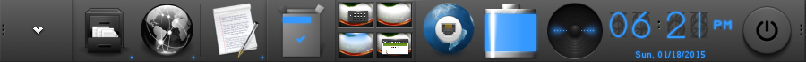

[click on any image to enlarge]

Virtual Desktops Organize Your Tasks
Depending on the Profile you selected during the initial setup, you may or may not currently have a Pager Gadget on your desktop. Regardless, you do still have Virtual Desktops. Virtual Desktops can be handy for organization, as they allow you to keep applications of a certain type grouped together on one desktop and those of another on a separate desktop.
The opaque graphic on the desktop is a representation of all desktops in use, and each will have a smaller graphic depicting the applications running on each.
There are several ways to switch among them:
- If you have a Pager Gadget, simply click on the graphic of the Desktop you wish to be in.
- Use the keyboard shortcut: Ctrl+Alt + <ArrowKey> in the direction you wish to move.
- Choose your desired desktop via Main Menu>Desktop>Virtual.
{kind=link}
The Entire Desktop is the Menu
A click on any empty space of the desktop will bring up the Main Menu, where you can launch applications, adjust settings, shutdown the system, and so on. This is the standard on a fresh Bodhi installation. Most consider it very convenient. For the few that do not, the mouse-binding, left-click assigned to "Show Main Menu", can be easily removed/configured in: Main Menu>Settings>All>Input>Mouse Bindings, along with any other mouse-bindings.
Right-clicking an empty space on the desktop will bring up the Favorites Menu. Since there are no favorited applications on a fresh Bodhi installation, the Favorites Menu will not show on right-click. It is waiting in anticipation for you to add applications!

{kind=link}
Many Gadgets Show System Info
Many Gadgets are items that display system information, such as battery level, time, etc. Gadgets also allow you to interact with the system in some way, such as adjusting the volume. There are many Gadgets that provide a wide variety of functions. Many Gadgets support having multiple instances at one time, allowing you to place them in different locations such as Shelves (see Shelves section) or directly on the Desktop.
They can be found and added to the Desktop via:
Main Menu>Desktop>Change Gadgets (simplest method)
and
Main Menu>Settings>Gadgets (more advanced)
{kind=link}
Modules Control Gadget Availability
The respective Module must be loaded for its Gadget to be available. To put it simply, Gadgets are an instance of a Module in use. Bodhi comes with a wide selection of Modules installed by default, but even more can be installed at your discretion through the Bodhi AppCenter and Synaptic Package Manager.
You can load/unload Modules under Main Menu>Settings>Modules.

{kind=link}
Themes to Suit Your Style
Bodhi ships with several Themes to choose among.
You can select one you like under Main Menu>Settings>Themes. Bodhi's Artists have created many more themes and wallpapers, which you can view and download through our Bodhi Art webpage.
(see: Resources)
You may also download themes through the Synaptic Package Manager, located at Main Menu>Applications>Preferences>Synaptic Package Manager, with a quick search for "bodhi theme". If you prefer, select the "bodhi-theme-pack" package to install all available themes from the Bodhi Repositories. Think of the choices! The possibilities!!
Shelves - The Taskbar/Systray/Dock's Home, Sweet Home
Enlightenment provides Shelves to handle your Gadgets and launchers, if you prefer not having them on the Desktop. Most Gadgets that have their respective Module loaded can be added to a Shelf. You may also choose to have multiple Shelves anywhere around the border of your Desktop. Managing the number of shelves you have and their location/size (among other attributes) is done under Main Menu>Settings>Shelves. To manage the content(i.e. gadgets) of a Shelf, simply right click on a Shelf and select Contents. 
{kind=link}

Shading - Alternative to Minimizing
Want to get a window out of your way but don't want to minimize it to the taskbar? Then Shade it! Just double click the title bar of any window to "roll it up", and double click the title bar to "roll it down" again.
The screenshot here shows two instances of Terminology, one that is Shaded and one that is not. Terminology is currently the default terminal in Bodhi.
Some Handy Shortcuts:
Shortcuts are referred to as Bindings in Enlightenment and are categorized by the input. They are as follows:- Edge Bindings (edges of screen)
- Key Bindings (keyboard)
- Mouse Bindings (mouse+key)
- ACPI Bindings (events)
Alt+<left-click> (mouse)
allows you to click anywhere in the window to grab it and reposition
<left-click> (mouse)
on an open portion of the desktop, opens the main menu
<right-click> (mouse)
on an open portion of the desktop, opens the favorites menu
Ctrl+Alt+X (key)
closes a window
Ctrl+Alt+<ArrowKey> (key)
switches to the Virtual Desktop in the direction selected
Ctrl+Alt+M (key)
brings up the Main Menu
Shift+F10 (key)
maximizes a window vertically
Alt+Shift+F10 (key)
maximizes a window horizontally
Alt+Tab (key)
switches between windows on the same desktop
All bindings can be located and configured at:
Main Menu>Settings>All>Input